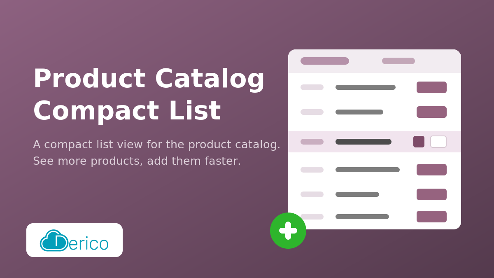
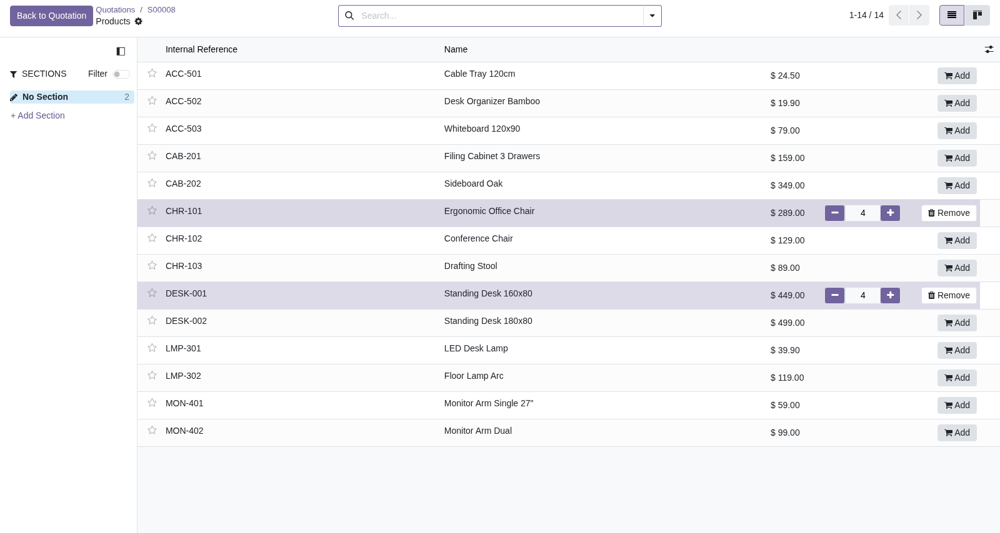
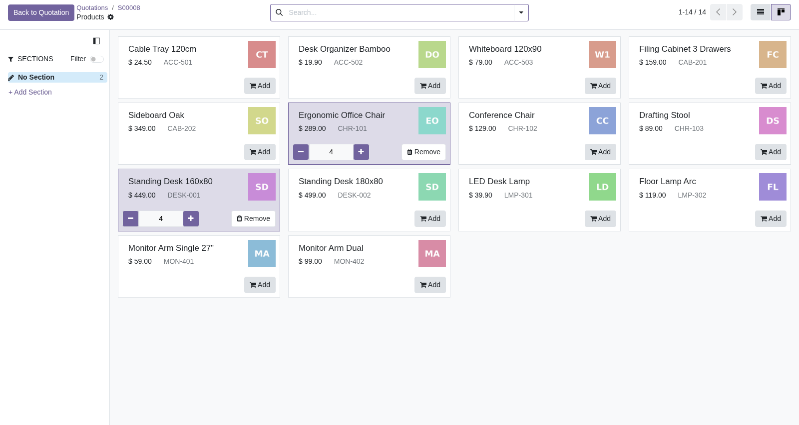

The product catalog used to add products to sale orders, purchase orders and invoices only offers a kanban view. Its cards show a product image and take a lot of space. With a large product range you spend more time scrolling than selecting.
This module adds a compact list view to the catalog. It fits many more products on one screen while keeping the full catalog behavior:
For sale orders the catalog opens in the list view by default; the kanban view stays available through the view switcher.

On other documents (purchase orders, invoices, ...) the catalog still opens in the kanban view and the list view is offered in the view switcher.

action_add_from_catalog on that
model and move the list entry of
action["views"] to the front.
Developed and maintained by
derico.
Support: md@derico.de